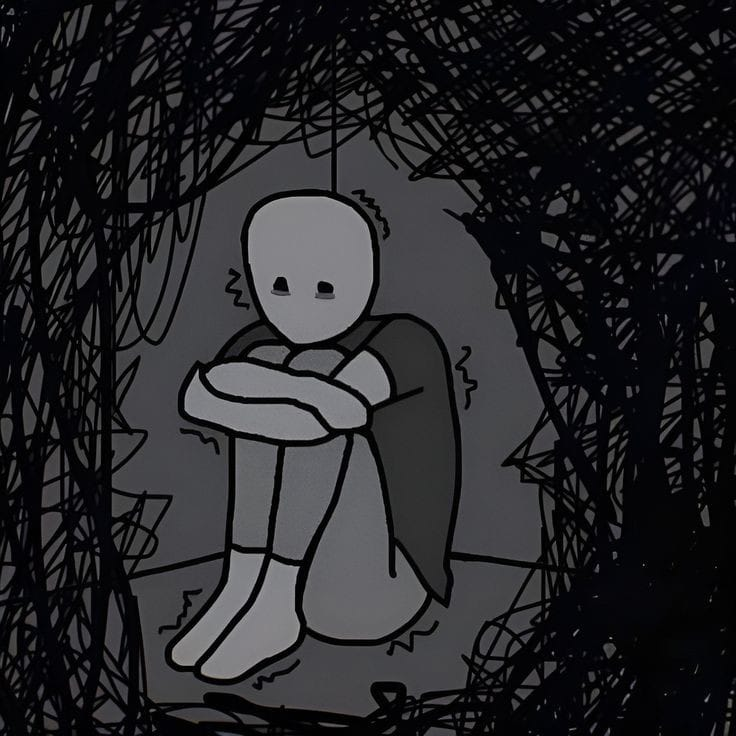
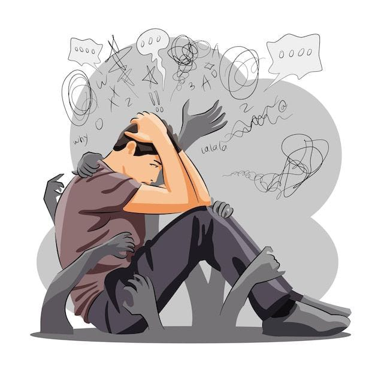

SINTOMAS Y TIPOLOGIAS

Un episodio depresivo es distinto de las variaciones habituales del estado de ánimo. Estos episodios abarcan la mayor parte del día, casi todos los días, durante al menos dos semanas.
Pueden presentarse varios síntomas más, como:
Dificultades para concentrarse
Un sentimiento de culpa excesiva o de baja autoestima
Falta de esperanza acerca del futuro
Pensamientos de muerte o suicidio
Alteraciones del sueño
Cambios en el apetito o en el peso
Sensación de cansancio acusado o de falta de energía.
Diagnóstico y tratamiento

Los tratamientos psicológicos pueden enseñar nuevas maneras de pensar, de hacer frente a las situaciones o de relacionarse con los demás.
Pueden incluir terapia conversacional con profesionales y con terapeutas no especializados supervisados.
La terapia conversacional puede llevarse a cabo cara a cara o en línea. Puede accederse a tratamientos psicológicos a través de manuales de autoayuda, sitios web y aplicaciones.
Los tratamientos psicológicos eficaces contra la depresión incluyen:
la activación conductual
la terapia cognitiva conductual
la psicoterapia interpersonal
el tratamiento para la resolución de problemas.
|